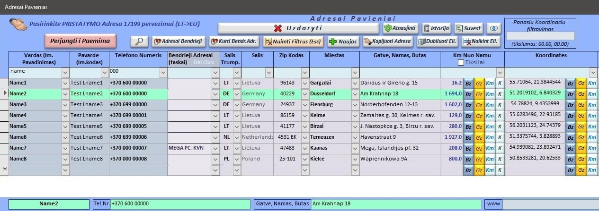
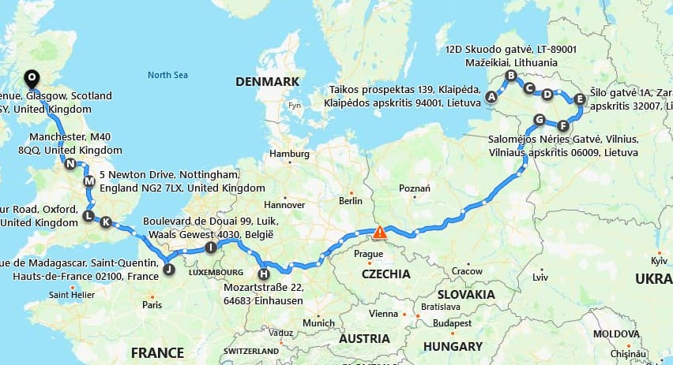

I design and develop desktop and web applications, as well as various tools that help companies achieve their business goals and fulfill their needs.
Some of the applications that I have already completed :
Aimer
Aimer is a desktop application, a tool for international transportation businesses that optimizes
passenger and parcel transportation processes. The system is designed to make work easier for managers and drivers,
ensuring the highest quality of service for your customers.
The program allows you to quickly and without errors plan routes, manage information, keep financial records and generate reports. Manual address entry, region searches and paper data management are replaced by automated solutions - all required information and visualization on maps are available with one click.
Get rid of the constant stress due to the flow of information. With Aimer, address management and route planning become a smooth, simple and secure part of your everyday life.
The program allows you to quickly and without errors plan routes, manage information, keep financial records and generate reports. Manual address entry, region searches and paper data management are replaced by automated solutions - all required information and visualization on maps are available with one click.
Get rid of the constant stress due to the flow of information. With Aimer, address management and route planning become a smooth, simple and secure part of your everyday life.

Here everything is in one place: information about customers, parcels, addresses, etc., its management, financial accounting,
reports, maps and even reminders before ending of technical inspection or insurance. Route planning consists of three main processes :
1. Gathering information for the charter (trip).
Manager collects and inputs all information about charter (trip) (passengers, parcels, pickup and delivery addresses, agreed prices, etc.)
into application during entire period before departure. If necessary (for example, if the client decides to leave later or earlier),
data can be moved to another charters:

For multiple use, the program constantly stores all data about customers, their addresses, etc., and also, for convenience,
information about collection-delivery points (called "Collection Points" - when more than one parcel or passenger is picked up at one place).
All information is found instantly according to the desired fragments of it (criteria). The criteria are summed up.
(For example: while talking on the phone, it is enough to enter the last few digits of the caller's phone number and
the program will "select" all relevant customers. By additionally entering a fragment of the city name (or any other criterion),
even more accurate information is "selected").

For convenience and accuracy Aimer integrates two widely in the world known maps.
The program processes both address and coordinate data (coordinates are especially convenient when there is no exact address - e.g. gas stations, etc.).
Finding address, coordinates or distance on the map is done with just one click.
2. Automated route alignment (with adjustment possibility).
At any time before departure the final arrangement or re-arrangement should be performed. Addressess are grouped and arrangement
relating on distance are done automatically by application. The entire route creation (queuing) process is fully automated
and takes just a few minutes including review (and corrections if needed). It is displayed on the map. After drawing up,
it is possible to adjust the route with one or more button presses (adjustments are also instantly displayed on the map).

3. Providing information to drivers.
Arranged and adjusted charter (trip) information can be provided to drivers in exported (pdf) paper version or sent by e-mail or by other tools like
WhatsApp, Messenger and etc.).

This application can be supplemented with other desired modules (Invoice generation, shipments, cash receipt order generation, fuel accounting or other desired modules.
Their technical capabilities, desired functions and price are discussed separately).
Main application parameters:
Both directions (outgoing, return) can be processed in one charter (trip) at once, or a separate trip can be created for each direction.
Maximum number of different addresses (different points of interest) - unlimited.
- Maximum number of users (e.g.: managers) - unlimited
- Maximum number of drivers:
- - in database - unlimited
- - per charter (trip) – 2 drivers
Computer and user requirements:
- Windows: 64 bit
- Ms Office 64 bit pack with Access included (preferable , but not necessary)
- User experience with Windows from 1 year
Page is under development